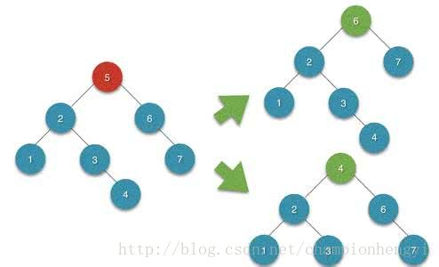
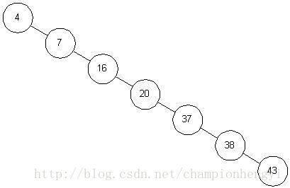

为什么我们需要掌握这些“高端”的树型结构
事实上，大型数据库的组织结构一般采用树型结构，我们必须要解决频繁更新数据的能力，要求支持高效的动态查找能力，包括记录的插入，删除，精确匹配查询，范围查询和最大值、最小值查询。但是由于数据库中包含了大量的记录，所以线性表的查询本身会因为记录太大而无法存储到主存之中，另外对于记录的插入和删除操作更需要移动大量的元素，这本身的效率是非常低下的。
二叉查找树（BST）的定义
二叉查找树要么是一颗空树，要么满足以下的定义：
- 若它的左子树不为空，那么它左子树上所有节点的值均小于等于根节点。
- 若它的右子树不为空，那么它右子树上所有节点的值均大于根节点。
- 它的左右子树均是二叉查找树。
这明显是一个递归定义，因此我们对于BST的操作大多是建立在递归之上的。
二叉查找树有一个重要的特征：对一颗二叉查找树进行中序遍历，可以得到一个递增序列，那么我们只要将中序遍历的遍历顺序反过来，那么我们就会得到一个递减序列，这也正是二叉查找树得名的原因。
BST的数据结构
1 | typedef int keyType; |
BST的建立
首先我们讨论一下怎么建立一颗二叉查找树，根据二叉查找树的定义，如果现在有一串序列，那么它的建立过程如下：
- 首先建立一颗空树；
- 使节点插入正确的位置（BST的建立正是建立在BST的插入算法之上的）；
- 序列为空为止。
那么我们现在应该如何给一颗二叉查找树中插入新的节点呢？
- 从树的根节点开始查找；
- 插入的关键字小于等于根节点则进入左子树，否则进入右子树；
- 由于新插入的节点必定是新的叶子节点，所以当此时的节点指针为空的时候，进行插入。
插入算法：
1 | void insert(BSTree **bstree, keyType data) { |
在进行节点插入的时候，我们并不希望指向根节点的指针随着遍历的进行也跟着移动，并且因为是对于指针的参数传递，这里必然使用二级指针，这样头结点才会被真正的初始化。然后我们在进行递归遍历节点的时候，我们也不能影响二级指针的指向，我之所以在这里着重强调，说实话，我这个bug还是小伙伴帮我改出来的，对于二级指针，一直都是感觉自己懂了，一碰到繁杂的操作，就又糊涂了。。。
建立算法：
1 | void create_BSTree(int array[], BSTree **bstree) { |
随后我们便可以对二叉查找树进行树状打印了：
1 | void print_tree(BSTree *bstree, int h) { |
仔细看上面的打印代码，没错，将中序遍历的顺序颠倒一下就行了。
BST的查找
BST的查找我们可以用递归和循环分别实现。
非递归实现：
1 | BSTNode *find(BSTree *bstree, keyType key) { |
非递归不再分析。
递归实现：
1 | BSTNode *find_recursive(BSTree *bstree, keyType key) { |
由于我们对二叉查找树进行查找的时候不需要回溯，所以我们每次进入新子树的时候，直接这样：
1 | return find(bstree -> lchild, key); |
return 语句阻止了回溯的发生。
BST的删除
BST节点的删除，情况比较复杂，我在这里分三种情况说明：
在进行节点删除的时候，我们需要两个指针，它们指向待删节点的父节点与待删节点。
1 | // 定义父节点和孩子节点（待删节点） |
首先我们考虑特殊情况，代码如下：
1 | // 首先考虑特殊情况（根节点为空|只有根节点） |
待删节点是叶子节点
- 找待删节点，并不断记录它的父节点。
- 将父节点的相应孩子域进行置空并free待删节点所占的空间。
先进行待删节点的查找：
1 | while(child != NULL && child -> data != key) { |
进行叶子节点的删除：
1 | // 待删节点是叶子节点 |
待删节点只有左子树或只有右子树
- 找到待删节点并判断此节点是否只有左子树或右子树。
- 将待删节点父节点的相应孩子域设置为该待删节点对应的左子树或右子树。
- 将待删节点置空。
1 | // 待删节点只有左子树或者右子树 |
待删节点既有左子树也有右子树
当碰到这种情况的时候，我们需要额外引入两个指针，一个用来记录找到的替换节点，一个用来记录替换节点的父节点（替换节点就是用来替换被删除的节点）。
那么我们应该如何找到替换节点呢？来看一张图：

我们知道对二叉查找树进行中序遍历所得到的是递增序列。
假设我们现在要删除节点5，这棵BST的中序遍历结果为：1，2，3，4，5，6，7，根据中序遍历的性质可知，5之左是它的左子树，5之右是它的右子树，现在我们要删除5，那么我们就要找可以替换5的4或6，也就是和5相邻的两个数，我们再来看一下这两个节点在树中的位置，4的位置在左子树中最右下角，6的位置在右子树的最左下角，我们选择查找任一节点进行待删节点的替换就行。仔细观察会发现这一规律对任意节点适用。
理解了上面寻找替换节点的两种方式之后，来看一下实现代码，我寻找的是左子树中最右下角的替换节点并同时记录替换节点的父节点：
1 | BSTree *alter; |
先重申一点，我们现在拥有四个指针，root->用来指向待删节点的父节点，child->用来指向待删节点，alter->用来指向我们找到的替换节点，alterParent->用来指向我们找到的替换节点的父节点。下面我们具体讨论四种情况：
对这四种情况，我希望大家可以认真考虑，画出一棵二叉查找树，然后去一个个进行实现。
1. 替换节点的父节点等于待删节点且删除节点是根节点的时候
1 | if(alterParent == child && child == bstree) { |
2. 替换节点的父节点等于待删节点但删除节点不是根节点的时候
1 | else if(alterParent == child && child != bstree) { |
3. 替换节点的父节点不等于待删节点但删除节点是根节点的时候
1 | else if(alterParent != child && child == bstree) { |
4. 替换节点的父节点不等于待删节点并且删除节点不是根节点的时候
1 | else { |
如上，可以看到每种情况的处理过程并不复杂，只要将每种情况都处理到，二叉查找树的删除问题也就迎刃而解了。
我把每种删除情况都测试了一下，都删除成功，具体的源码链接我放在下面，有兴趣的小伙伴可以研究研究。
BST性能分析
二叉查找树查找的最差情况为ASL（平均查找长度）=((1+n)*n/2)/n = (n+1)/2，和顺序查找相同，如图：

最好的情况与折半查找相同，ASL为log2N（图片不再贴出）。
对于BST的插入和删除来说，只需修改某些节点的指针域，不需要大量移动其它记录，动态查找的效率很高。